Here is where you, the reader, can quickly go through my posts keyed by subject. In general, any post that has any bearing on MAJestic is placed within this listing.
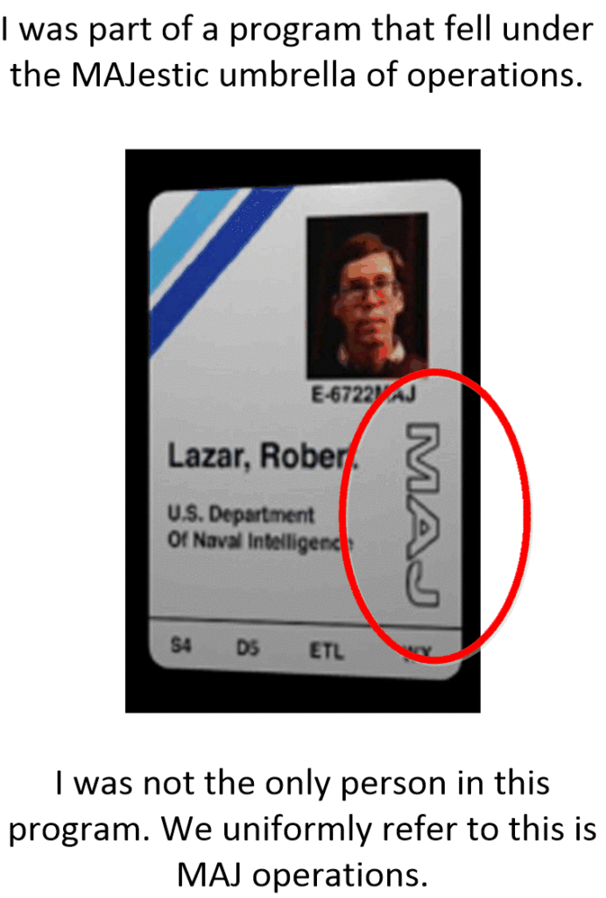
I really do not know why the organization was kept so secret. It really wasn’t because of any kind of military concern, and the technologies were way too involved for any kind of information transfer. The only conclusion that I can come to is that we were obligated to maintain secrecy at the behalf of our extraterrestrial benefactors.
Instructions
There are so many disinformation sites out there. Some are hoaxers, and some are fraudsters. Some are well meaning that generally pull in disinformation inadvertently. Some are just equivocators that receive information “telepathically”, and some are just intentional “bald-face” lies. Many are just nonsense based upon a for-profit motive.
But…
This is a real disclosure.
If you want to really and sincerely learn something then you will need to read each and every single post in this list. You will need to start at the top of the list and work your way down. It’s organized that way intentionally.
This isn’t a shopping supermarket tabloid, this is a textbook.
The best way to read a textbook is to start at the very beginning and go chapter by chapter. If there are questions and problems at the end of the chapter to work out, you do so. Then, when you are done, you go to the next chapter. To really get the most out of this disclosure, you will need to go chapter by chapter. Step by step…
Your name commands great respect, and your words carry immense weight, to those who realize what they are observing.
I have read all 16 parts of the textbook.
We are truly blessed to have access to this resource.
-Nomen Nescio 11MAY21
Summary
Welcome to MM.
First of all, you need to go on over to my FULL DISCLOSURE section. This is my MAJestic Index. You start at the top of the page and you go down article by article. Numerous times the articles are grouped into sub-indexes. Well, you go to the sub-index and then read all those articles and then return back to the MAJestic index. Long time readers of MM, tell me that it’s easily a couple of months of reading, but all say (without exception) that they how have a much better understanding of everything that they were asking about. It sure as hell beats trying to pick and choose from the bullshit on the internet that’s for sure.
This will tell you WHO I am, WHY I am doing this, WHERE I am, HOW I obtained this information, WHERE it came from, and WHEN it was acquired.
Once you do that, you will quickly see that this entire MM site is a transformative effort. And it is a roadmap to make you (as an IS-BE) out of the clutches of the “Prison Planet” and into the rehabilitation program that is now a “sentience nursery”. As such, this is not “just another one of those conspiracy websites”. It’s something really unique and special. And I offer tools, techniques, information, and study.
So aside from reading the full MAJestic Index, I also ask you to check on the site daily. I provide [1] Podcasts that discuss various issues, and support, [2] Tools to gain control of your IS-BE in my Affirmation Prayer Campaign Index, and a [3] Forum to ask questions and participate. Finally [4] I show you how you are supposed to act in behave in my Rufus Index. The rest of the website is filled with various information that “rounds out” what is presented to the individual searcher.
I use terms that might be unfamiliar, to you. But as you read, you will gradually see what is being presented, why and how it all fits together. Such terms as “slides”, “garbons”, Campaigns”, and all the rest are normal day-to-day discourse on MM.
An important note. A substantial redirection in my personal understanding took place when I read the authentic document known as “Alien Interview”. Up until that time, I was under the impression that MAJestic was a service-to-others organization, and the type-1 greys were a service-to-self. Now, I see things as they are. MAJestic is service-for-self, and the Type-1 greys, “The Domain” are “service-for-others”. So when you go through some of the older posts please keep this in mind. Life is a transformative venture, and changes is what you need to experience to grow. That is for all of us, including myself.
Welcome.
Step One – Separate the truth from the lies.
These next few posts are very important. If you have been searching for the “truth”, you have probably encountered all sorts of things on the internet. Most of which is absolute and fundamental nonsense. You have read and heard so much. You have seen all kinds of things too. Photo-shopped graphics and videos depicting amazing things are now the norm on the internet. How to filter out the facts from the nonsense?
Well…
Rule number one: The world, the people and the universe is absolutely not what you think it is. It is all quite positively different. Thus, to really understand what I have to disclose you need to take a deep breath and go down the “rabbit hole”.
Because it is REALLY different.
I have structured a way of teaching others about the TRUE REALITY. This is it. This is my method, and you all need to follow the course…
These first few posts are designed to help you discern the truth from the lies. So read these posts first. So let’s begin here.
Let’ put on our waders and trudge through the sludge of disinformation that has clogged up the internet, and has made it practically impossible to get any real and straight answers about the “extraterrestrial issue”. Let’s look at what you all probably had to deal with before you came here. The first two articles for you to read are…
- An army of fake disclosures; or how the Internet is flooded with disinformation.
- Metallicman discusses the absurdity of “Commander X”.
Now, perhaps you understand why I have set up this disclosure like I have. Which is the primary point of these two articles; to erase the bullshit that clings to your skin after searching on the internet.
There are so many people that come here, attracted by a singular article or two, skim-read and then leave. NO! That is NOT how you read this disclosure. You start at the top and you work your way down. Why? Here’s why, and your next reading assignment…
Now… with that out of the way, we will start with some history.
History
Oh, history need not be boring. It's actually very interesting. It's the stories of a man or a woman who have walked this path before. You can see their life, in their times, through their eyes. We can learn from their experiences.
Secret programs have always existed.
Anyone who tells you otherwise, or who snarkily makes an off-hand remark or disparaging post, is either an idiot or a paid disinformation shrill. Secrets are normal. Humans keep secrets as it is part of our basic personality, and organizations rely on personal secrecy to protect their actions and membership. It’s a very normal, and fundamental part of being a human.
Secret programs have always existed.
They have existed everywhere and have maintained their secrets until all the members have died. Here we look at an old scientific top secret program that has been resurrected from the dustbin of history. Click on it for your next reading assignment.
Well, that is interesting, Right? It’s an interesting article and discusses something that you, and most people, have absolutely no idea of. Well, that’s how it works, don’t you know. Secrets are secret.
Well, let’s fast forward to today and look at modern secret organizations.
The only American organization that is authorized to deal with extraterrestrials is MAJestic. That is it, and membership is severely restricted.
There are no exceptions.
This next post is a crash course on how Top Secret American programs operate, and why you will not find out secrets by reading the Washington Post, FOX news or the Huffington Post.
Real secrets are really secret…
The American mainstream and alternative media always talks about "leaks" and "selling secrets". People, I don't know what they are doing other than providing some kind of entertainment for the mindless American "sheeple". What ever they are dealing with, it's not in SECRETS. Real secrets are exactly that; secret.
Their membership is exclusive, and just because someone wants to have access, does not mean that they will get access. That means everyone, from the Congressmen, to Senators to the President himself. They are not worthy of being in the know. What do I mean?
Here’s your next article…
So now, let’s look at a little history of MAJestic. Here we get into the establishment of the MAJestic program though the first convening of the MJ-12 task team. And thus, you next article…
This next article discusses how the MJ-12 group established MAJestic and how it got setup, established and operates today. As well as how it functionally works.
Turning disinformation on its head…
That being said, the reader might be of the opinion that since only I am talking about this that it must just be my opinion. But that is not true, the evidence is out there that what I am referring to is ACTUAL and REAL and does actually exist. People who are tangential to the program sometimes “brush up against” the MAJestic walls and relate their experiences. Here are a few such examples…
Read the articles.
- The Admiral Wilson Leak: Evidence of USAPs (Unacknowledged Special Access Programs) & Reverse Engineering of Extraterrestrial technologies
- Surprise! It’s not Swamp Gas. The UFO’s are real and the government has finally admitted it.
Want hard proof?
And maybe you just don’t want to believe what people are saying. Maybe you want to see “evidence”, and other things aside from a few pithy sayings that you read while munching on fried pig skins, eh? Maybe you want to see some actual technology.
As if infrared night vision, fiber optics, Kevlar, and micro-circuits aren't proof enough. What? You actually believe that these technology breakthroughs come as a result of some guys tinkering alone in their basements? If you do, then you do not understand how R&D works. Ideas do not "pop" out of the air spontaneously. They are created as a solution. Which is something that I always underline. Look at the motivation and the environment why things occur. That will tell you everything about how they appeared.
Evidence…
You want actual facts, and proof. Well, nothing can be better proof than aircraft that can go invisible and travel at enormous speeds, is that enough proof for ya?
- Very interesting patents are coming out from the United States Navy, and being denied because there isn’t any supporting technology. Huh?
- Hyper-stealth cloaking technology. Just in time for SHTF Geo-political realignments.
- The Disclosure of the CARET program at PACL
Step Two – My Training & Experiences
Now, if you the reader have read those introductory posts, you should be able to handle my narrative. Make no mistake this is my autobiography. This is my story about how I was recruited for this MAJestic program while in the US Navy attending AOCS / Flight School. It’s my first-hand experience.
And as such, the posts are like chapters in a very long book. You start at chapter one and proceed until you finish the book…
Now off to the wilds…
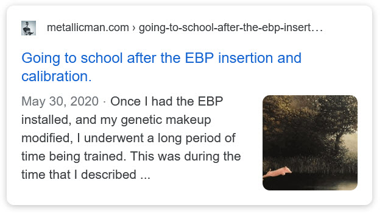
After training around 1986, into 2006 I was an “active” MAJestic “operator. Here’s sort of what it was like…
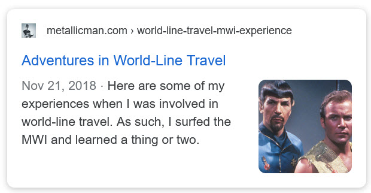
And how my missions ended…
And a few lessons learned when armored police cars and Kevlar suited storm troopers swarmed my house as I was getting ready to leave for my work (my day job)…
And getting “retired” …
What? You think that “spooks” are allowed to walk the streets freely? Do you? You think that we just get on the internet and tell all our secrets for the world to see and talk about reptilians, and the great enlightened ones, do you?
For me, there was an attempt to “disable me”, and when that failed, I was sent into an observation platform. This is my story.
- The Deactivation Procedure (How my ELF probes were shut off, and my role within the WU-SAP terminated.) Part 1
- The Deactivation Procedure (How my ELF probes were shut off, and my role within the WU-SAP terminated.) Part 2
- What life is like inside the ADC Prison in Arkansas
- Some stories from prison. How other people ended up being locked up. The landscaper.
- Coping while in Chrysalis
- Being Ripley 8
Finishing my “retirement”, and appropriately saying “Fuck this!” and leaving the USA for good…
- What it was like for me to leave America for China.
- Subliminal Seduction; subconscious programming using subsonic sounds and radiation
Ah…
But it’s not over. Not really.
The United States government invested a lot of money, I mean billions of dollars, in myself and the program that I was in. You don’t think that they are just going to “bleed me out” and not keep an eye out do you?
No. Of course not.
Even as I sit in “far away” China. Minding my own business. The “long arms” of the United States military empire is out there ready to squash you like a bug…
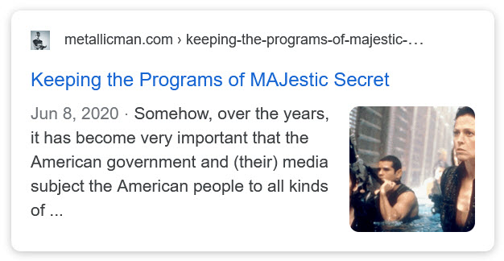
But it’s more than that.
While I might be “retired” by MAJestic. Our extraterrestrial benefactors still use me for their purposes. And while the MAJestic side of the coin is all shut down, I am forever part of this other species in whatever role that they have for me. And they do communicate with me, keep tabs on me, and alter me as they deem fit…
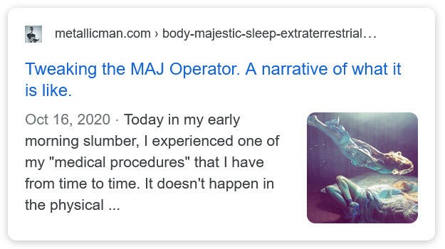
So while I am looking “over my shoulder”, I am cautiously and guardedly presenting the following tidbits of “breadcrumbs” for interested parties (such as yourself) to learn about.
In so doing, let it be completely understood that I have restrictions and limitations on what I can discuss and disclose…
Step Three – Our Universe
Now that you know how MAJestic operates, works, and obtains it’s members, and you know my story we can start talking about the disclosure in detail.
And here it is in all it’s glory. It’s so far incomplete as I have many more posts to add to this list. Trust me, I am churning them out as fast as I can….
To understand how everything works in this universe, you need to see the universe for what it is. And it is decidedly NOT what everyone thinks it is. If you try to fit what conventional belief is, you will forever be confused. So here we start looking at the universe as it actually is.
And we see that soul, consciousness and amazing God-like technology all work together into one unified whole…
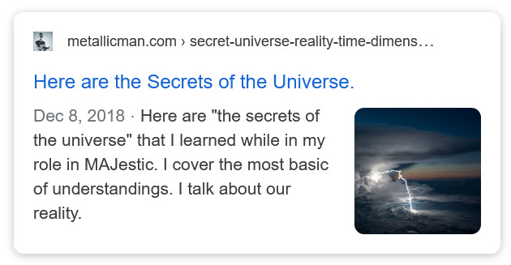
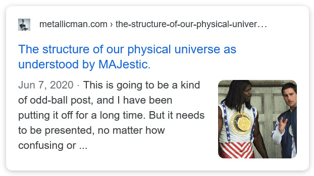
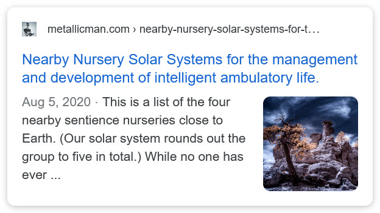
Now that you know how this universe works and operates, you can see why most of the “extraterrestrial” / “UFO” nonsense out there is so radically wrong. It’s all bullshit. It really is. Those that have mastered technologies far in excess of what we understand truly understand how our universe works.
Step three-A Our Earth
Step Four – Extraterrestrial Life
That’s the big thing, right?
Everyone wants to know is the earth is all that there is. And if MAJestic exists, then there must be something that I can say about this kind of matter. And Yes I Can.
Here are just some posts that discuss extraterrestrial life in general…
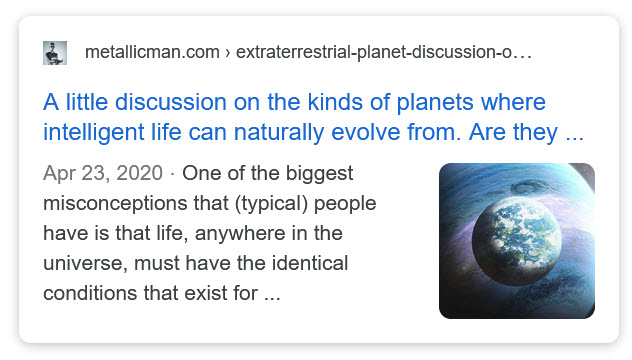
Step Five – The Earth as a sentience nursery
Well, the idea that the universe is a big empty place, and that humans are the smartest and best species to inhabit it is … well, ludicrous.
Earth is a sentience nursery, and our section of the galaxy is a well-tended, well-established suburb of the galaxy. Our species is just, well, infants in the grand scheme of things.
Which brings up my role somewhat…
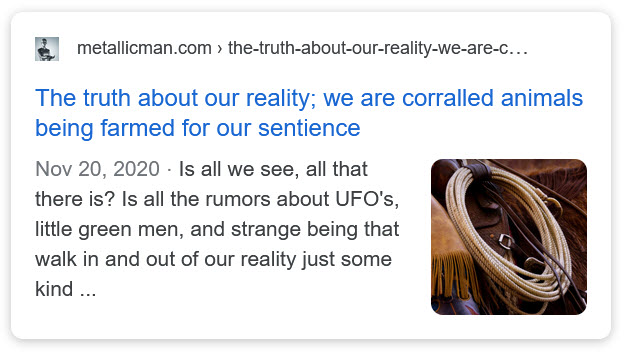
And why there are limitations on human movement off planet…
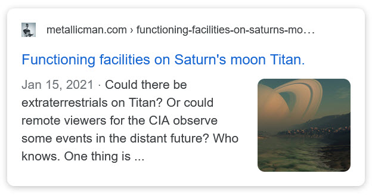
Well, that being said, MAJestic has been working with other species…
Step Six – Species
Here I discuss some of the extraterrestrials that MAJestic has been involved with… that I am privy to discuss.
I have only first hand knowledge of four species.
That is the extent of what I can discuss, and of that, my knowledge is limited, and what I can say is restricted even further. Never the less, you all might find what I have to say of interest.
This link (below) will take you to all those articles on this particular subject.
Step Seven – World-Line Travel
Since our universe is quantum in nature, and the technologies of all of our extraterrestrial friends and benefactors bend time, space and reality, it should be well understood that our idea of what the universe is, is actually quite wrong.
So here are some posts related to that.
In these posts we talk about how reality has been bent or altered either by technology or thought control…
This link (below) will take you to all those articles on this particular subject.
Step Eight – Utilizing Intention
Now that you, the reader can see that it is normal that Top Secret organizations exist and operate, and that they know things that are denied to “regular normal people”, it should be made absolutely clear that the above mentioned posts all have one thing in common…
Our universe operates on the laws of quantum physics. Not Newtonian physics.
And the number one law of quantum physics is that thoughts create our reality.
Thus to fully have mastery of our life, of our earth, and of our universe, we must first master our minds. We must be able to control our thoughts and be able to direct them.
Here is a series of posts that revolve around that concept; that you can control your life and your reality by controlling your thoughts…
This link (below) will take you to all those articles on this particular subject.
Step Nine – Other Universes / Heaven
Well, we think we know everything, now don’t we?
Well, we do not.
We only perceive a mere fraction of all that there is. And our simple minds interpret what we see as being all there is. Oh, boy oh, boy is that ever wrong.
We are dealing with species that see the world in a much greater degree of perception than we can even conceive of. And for me to do my role, I had to be entangled with this greater perception…
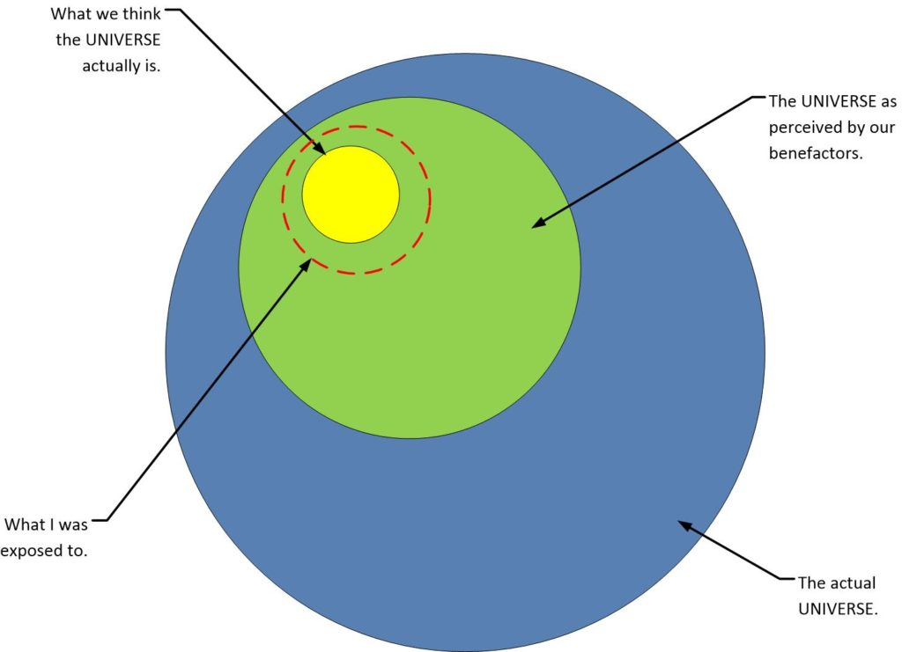
Perception compared to reality.
We do know that there are other universes. “Our universe” is not the only one. But how can we visit them?
Well, we can, but we need to recognize that we are consciousness and to visit other realities we need to leave the realities within this universe and enter other universes via our soul consciousness. Thus, as consciousness, we can do two things;
-
-
- We can conduct world-line travel. (In particle form).
- We can travel outside of a world-line. (In wave form).
-
Once our consciousness enters the wave form it can travel all over the place. It can visit the “spaces” between the world-lines, and “go upward into the light” and reach “Heaven”.
There are all sorts of names and degrees of what constitutes “Heaven”. For now, I will just keep it simple and use that term to refer to EVERYTHING outside of a given world-line.
Now I have experienced all sorts of crazy-ass stuff associated with “Heaven” though my EBP entanglement. Most of which is beyond my ability to vocalize into any kind of understanding. But, I have my methods.
Firstly, I can observe things, and then relate them as an observer…
And secondly, I can advocate a person that can describe what I know to be true… in a way much better than I can.
Thus the works by the great Doctor Michael Newton who studied the geography of Heaven through regression hypnosis. It might be something that most people would discount as "tin foil hat" nonsense, but his works absolutely and accurately describe what I have observed personally in my MAJestic dealings. Though, please take note that he did not understand the MWI, and some of his assumptions are in error. What he did was try to map out what Heaven was from the basis of what "time" and "reality" is. Still the best reads out there.
The first book is considered “ground breaking”, I however thought that it was rather elementary. Thus, I strongly urge any reader to read this book first before you tackle the second…
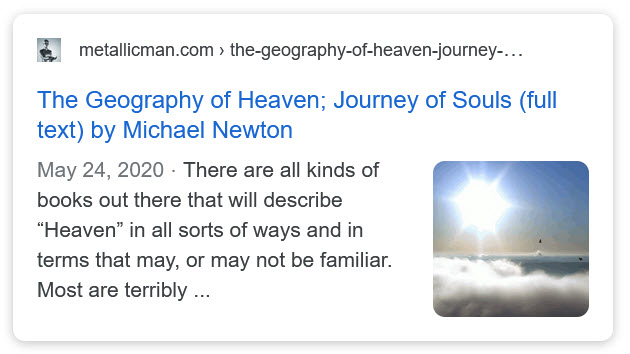
Unfortunately, this first book has all kinds of “new age” things inside of it that pretty much “turned off” my readership. It also had some misconceptions. So I went ahead and annotated the book and explained things so that my base readership would understand what is going on, relative to MAJestic and the entire universe. Here are the posts broken down for easy reading and study…


The second book is full of “red meat” and is just packed with information. However, most readers will not be able to understand it unless they read the first book. This book, due to the size and complexity has been broken down into three posts. A lot of good stuff is here.
Again, realize that he and his patents did not understand what “time”, “realities” and the concept of “quantum shadows”. Please take his misconceptions into account when you read his works.


Step Ten – And how our universe actually works…
Our universe works and obeys quantum physics laws. These are quite unlike what we were all taught in school; the Newtonian Laws of physics. Once you totally grasp this reality, that Newtonian physics is but a small subset of quantum physics, then one can start to fully understand and comprehend the shear totality of what is being presented herein.
To start, let’s cover all those scientific experiments that were set up to find out how PSI and ESP works. For they have discovered some astounding things…


Step Ten A – A glimpse into what our actual universe is.
Well, forget all those notions that our universe is something out of “Star Trek”, “Star Wars” or anything like that. Our universe functions and looks like something totally different. To be truthful, our universe more resembles an old science fiction story by Robert Heinlein titled “Glory Road”. While it is a fiction, it will best serve you to well remember, and keep in mind, that this story is pretty close to what our true reality is like…
And maybe you can see some of what is denied to you by using the proper tools. Perhaps…
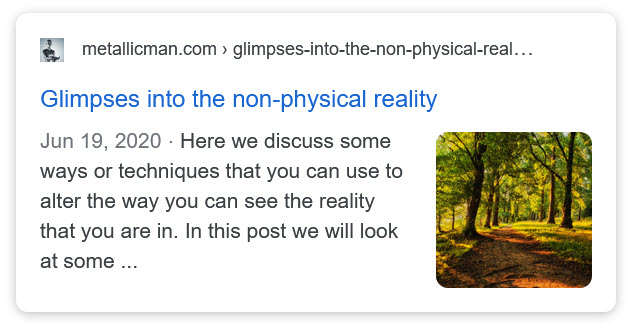
Step Ten B – The drug option.
Most of the tools involve changing how your brain processes the I/O that it obtains from it’s senses. By changing the process, we can see things differently. Perhaps distortedly, or perhaps more accurately. This involves the use of chemicals. And mind-altering chemicals can be dangerous if you do not know what you are doing. But if you actually do know, then this is for you…
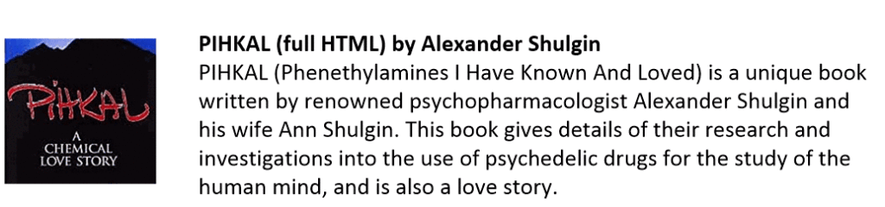

Step Eleven – Influencer Questions
Now that I have presented such a great selection of posts to muse about, it should be of no surprise that people have asked me questions. Well here are posts related to the Q&A efforts asked of me. It’s good stuff, I’ll tell you what.
This link (below) will take you to all those articles on this particular subject.
Step 12 – Will we ever fly to the stars?
This is a common enough question. Will humans ever get to fly “to the stars” and explore space using technologies that we can understand and utilize? Well here are some posts on that subject…
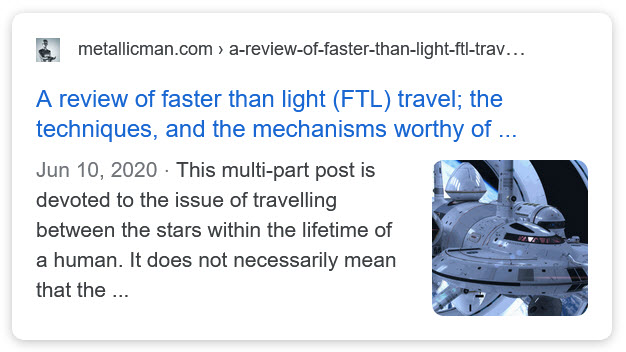
And for part #2…
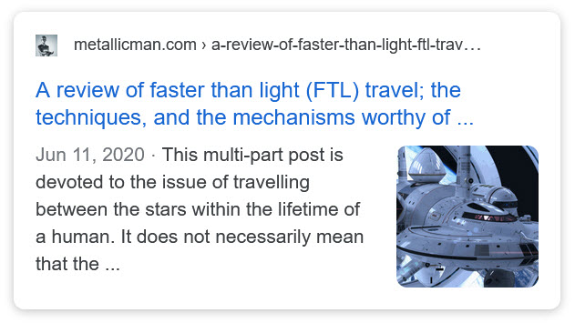
And part #3…
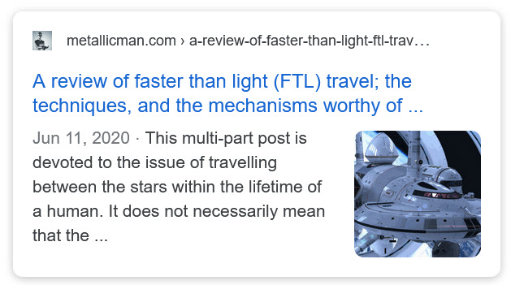
And Part #4…
Step 13 – Who I am.
Yeah, now you read everything. Now take a final gander on who I am and what my role is…
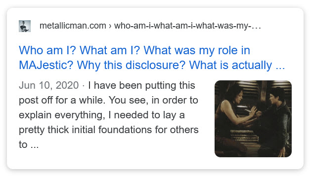
Step 14 – John Titor Related Posts
Another person, collectively known by the identity of “John Titor” claimed to utilize world-line (MWI egress) travel to collect artifacts from the past. He is an interesting subject to discuss. Here we have multiple posts in this regard.
This link (below) will take you to all those articles on this particular subject.
Step 15 – DIY World Line Travel
I have moved all these posts on to their very own index. If I leave them here, it just clutters u everything. Ugh. Anyways, go for it, if you are adventuresome enough…
This link (below) will take you to all those articles on this particular subject.
Step 16 – My advice to the world
Do not panic. Things are not as bad as they might appear.
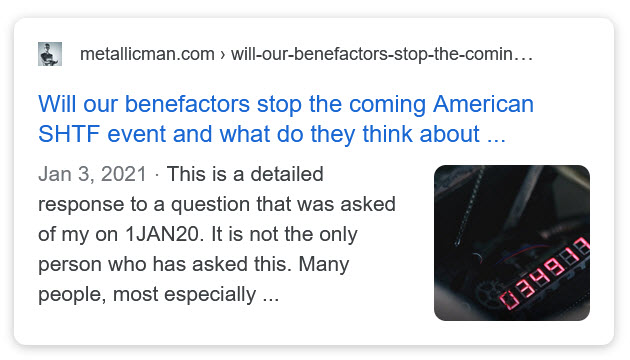
Articles & Links
You’ll not find any big banners or popups here talking about cookies and privacy notices. There are no ads on this site (aside from the hosting ads – a necessary evil). Functionally and fundamentally, I just don’t make money off of this blog. It is NOT monetized. Finally, I don’t track you because I just don’t care to.
To go to the MAIN Index;
- You can start reading the articles by going HERE.
- You can visit the Index Page HERE to explore by article subject.
- You can also ask the author some questions. You can go HERE .
- You can find out more about the author HERE.
- If you have concerns or complaints, you can go HERE.
- If you want to make a donation, you can go HERE.
Please kindly help me out in this effort. There is a lot of effort that goes into this disclosure. I could use all the financial support that anyone could provide. Thank you very much.
[wp_paypal_payment]